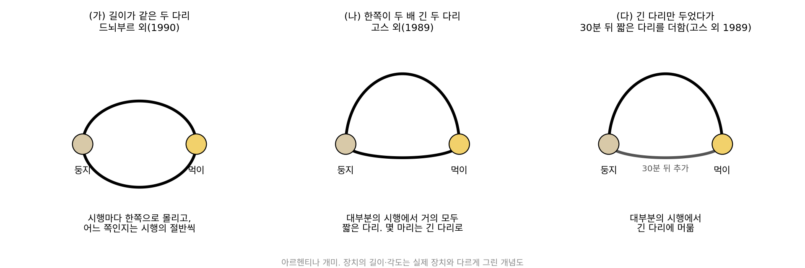
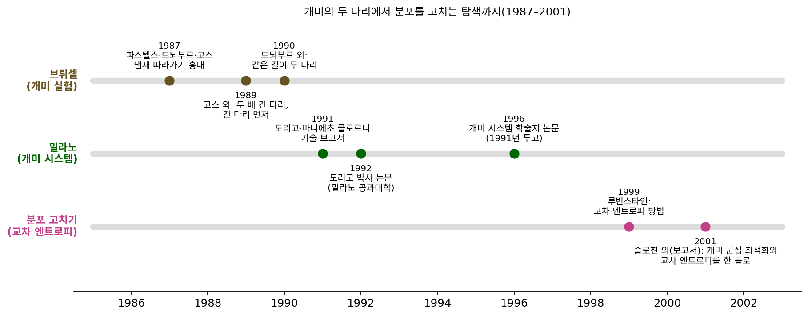
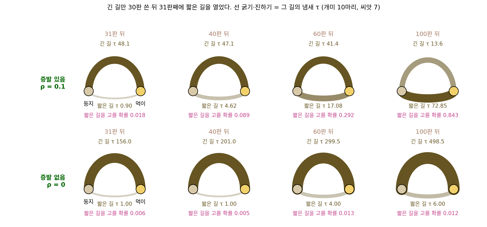
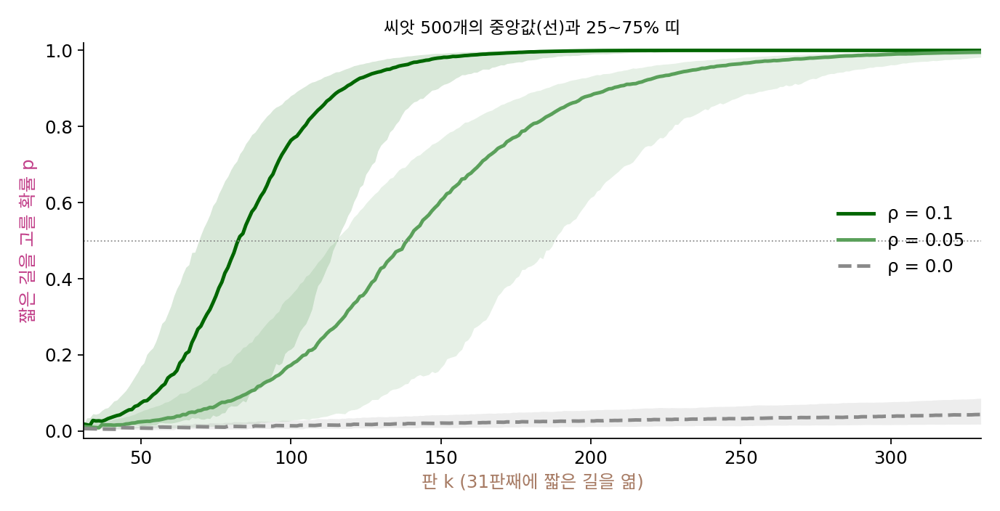
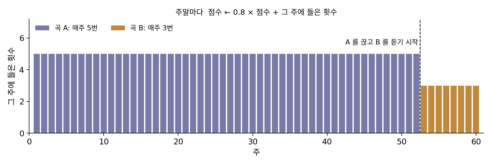
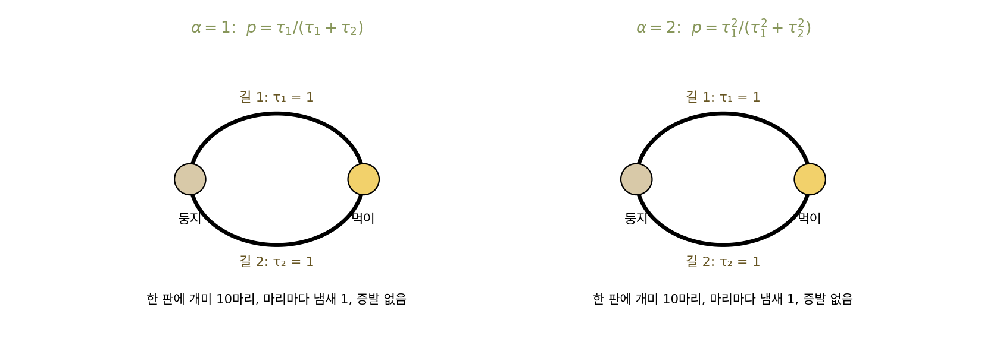
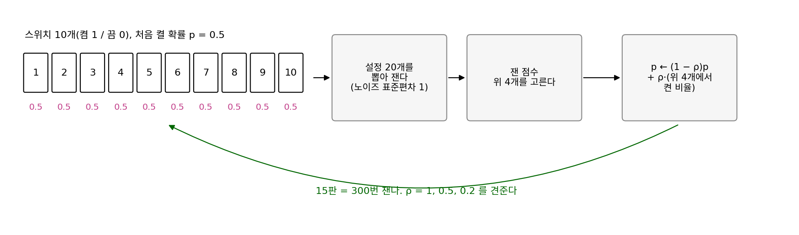

구조를 쓰는 탐색: 값만 잴 때 무엇을 더 알면 덜 재나
개미 군집: 좋았던 길을 분포로 기억하기
동적 계획법은 격자의 칸마다 「여기서 도착까지 가장 짧은 시간」을 적은 표를 채워 가장 짧은 길을 찾았는데, 그 표가 작았던 것은 남은 시간이 「지금 어느 칸에 있나」 하나로 정해졌기 때문이다. 택배 기사가 집 N곳을 한 번씩 모두 들르고 돌아오는 순서(외판원 문제)에서는 남은 시간이 「이미 들른 집이 어디어디인가」에도 달려서, 표에 지금 위치 N가지와 들른 집의 조합 2N가지를 곱한 만큼 칸이 필요하다. 집이 50곳이면 칸이 5.6 × 10¹⁶개라 칸마다 4바이트만 써도 225페타바이트가 든다. 그래도 짧은 경로들끼리는 서로 닮았다. 집 50곳을 아무렇게나 놓고, 엇갈린 두 경로 조각을 풀어 다시 잇는 손질을 더는 나아지지 않을 때까지 되풀이한 경로 30개를 비교하면 두 경로가 평균 70.2%의 길을 함께 쓴다(아무 순서 경로 둘은 4.1%). 두 집 사이의 길은 1225개뿐이니, 좋았던 경로들이 어느 길을 지났는지를 길마다 숫자 하나로 적어 두었다가 다음 경로를 뽑을 때 쓸 수는 없을까?
역사: 다리 둘 앞의 아르헨티나 개미
벨기에 브뤼셀 자유 대학교의 장루이 드뇌부르(Jean-Louis Deneubourg)와 동료들은 개미 떼가 지도 없이 짧은 길을 찾는 일이 어떻게 일어나는지 보려고, 아르헨티나 개미 떼의 둥지와 먹이 사이에 다리 두 개를 놓았다. 이 개미는 오가면서 땅에 냄새 물질인 페로몬(pheromone)을 남기고 냄새가 진한 길을 더 자주 따라간다. 드뇌부르와 동료들은 앞서 다리를 지난 개미가 m₁, m₂마리일 때 다음 개미가 첫째 다리를 고를 확률을 (m₁ + k)h / ((m₁ + k)h + (m₂ + k)h)로 적었다. 자크 파스텔스(Jacques Pasteels), 드뇌부르, 사이먼 고스(Simon Goss)의 1987년 몬테카를로 흉내에서는 k ≈ 20, h ≈ 2일 때 그 확률식이 실험과 잘 맞았다. 앞선 개미 수에 비례하는 것보다 더 세게, 대략 제곱으로 끌린다는 뜻이다.
1990년 『곤충 행동 저널(Journal of Insect Behavior)』에 실린 드뇌부르와 동료들의 실험에서는 두 다리의 길이가 같았다. 개미들은 처음에 두 다리를 반반쯤 고르다가 우연히 조금 더 많이 지난 다리로 점점 몰렸고, 실험을 여러 번 되풀이하면 어느 다리로 몰리는지는 대략 절반씩이었다. 그보다 앞선 1989년 고스와 동료들의 실험은 한 다리를 다른 다리보다 두 배 길게 만들었다. 이번에는 대부분의 시행에서 얼마 뒤 거의 모든 개미가 짧은 다리만 썼는데, 짧은 다리를 우연히 고른 개미가 먼저 먹이에 닿아 먼저 돌아오므로 짧은 다리에 냄새가 먼저 쌓였기 때문이다. 그래도 몇 마리는 끝까지 긴 다리로 다녔다. 같은 논문에는 긴 다리만 놓아 두었다가 30분 뒤에 짧은 다리를 더한 실험도 있었는데, 이때 개미들은 대부분의 시행에서 짧은 다리를 가끔만 고르고 긴 다리에 머물렀다. 냄새가 남아 있는 시간이 시행 하나의 길이와 비슷할 만큼 길어서, 개미 떼가 처음 고른 긴 다리를 잊지 못한 것이다.

이 실험을 계산으로 옮긴 사람은 밀라노 공과대학의 박사 과정 학생이던 마르코 도리고(Marco Dorigo)다. 그는 알베르토 콜로르니(Alberto Colorni), 비토리오 마니에초(Vittorio Maniezzo)와 1991년 기술 보고서 「탐색 전략으로서의 양의 되먹임」을 냈고, 1992년 박사 논문에서 개미 시스템(Ant System)을 외판원 문제에 시험했다. 처음 만든 세 판 가운데 개미가 도시를 옮길 때마다 바로 냄새를 남긴 두 판은 성적이 나빠 버려졌고, 모든 개미가 한 바퀴를 다 돈 뒤 경로가 짧을수록 많은 냄새를 남기는 판이 남았다. 실제 개미를 설명하는 데는 필요 없던 증발도 규칙에 들어갔다. 학술지 논문은 1991년에 투고해 1996년에야 실렸고, 처음의 개미 시스템은 문제가 커질수록 다른 방법에 크게 뒤처져서 그 뒤의 개량판들은 주로 냄새를 누가 얼마나 남기고 어떻게 관리하는지를 바꿨다(도리고·슈튀츨레, 2004).


짧은 다리가 이기는 건 당연한 것 같은데요. 개미가 두 다리를 걸어 보면 어느 쪽이 짧은지 알잖아요.

개미 한 마리가 두 다리를 다 걸어 보고 길이를 비교했을까요? 실험에서 개미가 한 일만 떠올려 보세요.

냄새를 남기고, 냄새가 진한 다리를 더 자주 고른 것뿐이에요. 음, 그러면 길이를 잰 개미는 한 마리도 없네요.

그런데도 개미 떼 전체로는 짧은 다리를 골랐어요. 무엇 때문이었죠?

짧은 다리를 탄 개미가 먼저 돌아와서 그 다리에 냄새가 먼저 쌓였으니까요. 긴 다리를 먼저 준 실험에서 진 것도 같은 이유고요. 길이가 아니라 냄새가 먼저 쌓인 순서가 이긴 거예요.

그럼 도리고는 개미한테 없던 증발을 왜 굳이 넣었어요? 실제 개미는 그거 없이도 짧은 다리를 찾았잖아요.

그 개미들은 긴 다리를 먼저 받자 거기서 못 빠져나왔지요. 생물학자에게 증발은 너무 느려서 셈에서 빼도 되는 것이었지만, 도시가 많은 계산에서는 처음 몇 바퀴에 우연히 나온 나쁜 경로를 잊게 해 줄 장치가 필요했어요. 다만 1991년에는 이 규칙을 「분포를 고친다」는 말로 설명할 틀이 없었어요. 크로스 엔트로피 방법이 나온 것이 1999년이고, 둘을 한 틀로 묶은 정리는 2001년 보고서에 나와요.

증발이 정말 긴 다리에 갇힌 개미 떼를 꺼내 주는지는 다리 둘만 놓고 냄새 숫자를 판마다 따라가 보면 알 수 있지 않을까요?
짧은 길과 긴 길, 개미 열 마리
증발이 무슨 일을 하는지 보려면 정답을 아는 가장 작은 경우가 좋다. 길이 둘뿐이면 탐색 분포가 숫자 하나(짧은 길을 고를 확률 p)로 줄어서 판마다 눈으로 따라갈 수 있고, 어느 길이 짧은지도 미리 안다. 둥지와 먹이 사이에 길이 1인 짧은 길과 길이 2인 긴 길이 있다고 하자. 한 판마다 개미 n = 10마리가 두 길의 냄새 τ(타우)의 비율대로 길을 고르므로, 짧은 길을 고를 확률은 p = τ짧은 / (τ짧은 + τ긴)이다. 다녀온 개미는 길이의 역수만큼 냄새를 남겨서 짧은 길에는 1, 긴 길에는 0.5를 남기는데, 긴 길을 한 번 다녀올 시간에 짧은 길은 두 번 다녀오니 같은 시간에 남기는 냄새가 두 배라는 뜻이다. 판이 끝나면 모든 냄새를 1 − ρ(로)배로 줄이는데, 여기서는 ρ = 0.1로 두고 처음 냄새는 짧은 길과 긴 길 모두 1로 해서 씨앗 3으로 돌렸다.
| 판 | 짧은 길을 고른 개미 | 짧은 길 냄새 | 긴 길 냄새 | 다음 판 p |
|---|---|---|---|---|
| 시작 | 없음 | 1.000 | 1.000 | 0.500 |
| 1 | 3 | 3.900 | 4.400 | 0.470 |
| 2 | 4 | 7.510 | 6.960 | 0.519 |
| 5 | 8 | 21.215 | 10.754 | 0.664 |
| 10 | 9 | 44.813 | 10.683 | 0.808 |
| 20 | 9 | 69.670 | 9.269 | 0.883 |
| 40 | 10 | 90.429 | 4.069 | 0.957 |
첫 판에는 짧은 길을 고른 개미가 셋뿐이라 p가 0.470으로 내려갔지만 둘째 판에 바로 0.519로 돌아섰다. 씨앗을 1000개 바꿔 돌리면 1000번 모두 100판 안에 p ≥ 0.9에 닿았고, 닿기까지 판 수의 중앙값은 13이다. 이 배치에서는 증발을 꺼도(ρ = 0) 1000번 가운데 889번이 100판 안에 0.9에 닿는다(중앙값 22판). 짧은 길과 긴 길이 처음부터 함께 열려 있으면 먼저 돌아오는 개미만으로도 충분했던 고스의 개미와 같다.
증발이 할 일은 긴 다리를 먼저 준 고스의 실험에서 생긴다. 처음 30판은 긴 길만 열어 두어 개미 열 마리가 모두 긴 길로 다니게 하고, 31판째에 냄새 1인 짧은 길을 연다. ρ = 0이면 긴 길 냄새는 30판 동안 쌓인 151에서 줄지 않으니 짧은 길을 고를 확률이 0.006에서 시작하고, 씨앗 7로 400판까지 돌려도 0.048에 머문다. ρ = 0.1이면 긴 길만 쓰는 동안에도 냄새가 5 / 0.1 = 50 근처에서 더 늘지 못하고, 개미가 떠난 뒤에는 한 번 남긴 냄새가 6.58판마다 절반으로 준다. 아래 그림의 선 굵기가 두 길의 냄새다.

씨앗 500개로 짧은 길을 연 뒤 p ≥ 0.5에 닿기까지 걸린 판 수를 세면 다음과 같다.
| 증발률 ρ | 30판 뒤 긴 길 냄새 | p ≥ 0.5까지 판 수(중앙값) | 2000판 안에 0.5에 못 닿은 씨앗 |
|---|---|---|---|
| 0.1 | 47.92 | 47 | 500개 가운데 102개 |
| 0.05 | 78.75 | 100 | 500개 가운데 88개 |
| 0 | 151.00 | 닿은 13개의 중앙값 1421 | 500개 가운데 487개 |

증발이 있어도 다섯 번에 한 번꼴로 갇힌 것은 증발이 나쁜 기억만 골라 지우지 않기 때문이다. 짧은 길을 연 직후 p는 0.02 남짓이라 열 마리가 모두 긴 길로 가는 판이 몇 번 이어지기 쉽고, 그동안 짧은 길의 냄새도 1, 0.9, 0.81, 0.729로 똑같이 증발해 다시는 뽑히지 않을 만큼 옅어진다. 냄새에 아래 한계 0.5를 두어 그보다 옅어지지 않게 하면 500번 모두 짧은 길로 옮겨 가고 중앙값은 51판이다. 1996년 토마스 슈튀츨레(Thomas Stützle)와 홀거 후스(Holger Hoos)의 맥스–민 개미 시스템(MAX–MIN Ant System)이 냄새에 위아래 한계를 둔 것도 탐색이 한 경로에 굳어 버리는 일을 막으려는 장치였다.
두 길 장난감의 규칙을 길이 여럿인 경우로 적으면 두 줄이다. 외판원 문제라면 τi는 두 도시를 잇는 길 i 하나의 냄새이고, 개미 한 마리는 다음 도시를 아래 확률로 하나씩 골라 한 바퀴를 만든다. 냄새를 α(알파)제곱해서 쓰는 일반 꼴로 적으면 다음과 같다.
장난감에서는 α = 1이었다. 도리고의 개미 시스템은 여기에 두 도시 사이 거리의 역수를 몇 제곱한 값도 곱해 가까운 도시를 조금 더 자주 고르게 했다. 이렇게 답을 만들 때마다 그 답이 지난 길에 비용이 작을수록 많은 냄새를 더하고, 모든 냄새를 조금씩 증발시키면서, 냄새의 비율로 다음 답들을 뽑는 방법을 개미 군집 최적화 (좋았던 길을 냄새로 기억하기 / ant colony optimization, ACO)라 한다. 유전 알고리즘은 좋은 답 스무 개를 개체군으로 들고 다녔지만, 개미 군집 최적화는 판이 끝나면 답을 모두 버리고 길마다 숫자 τ 하나만 남긴다. 들고 다니는 것이 답이 아니라 다음 답을 뽑는 분포의 파라미터이고, 증발률 ρ는 그 분포를 한 판에 얼마나 고칠지 정하는 학습률 구실을 한다.
ML에서: 크로스 엔트로피 방법, 분포를 고치는 탐색
냄새를 거쳐 확률을 만드는 대신 확률을 바로 들고 다녀도 된다. 학습 설정의 스위치마다 켤 확률 pi를 두고, 설정을 여럿 뽑아 재고, 점수가 높은 몇 개에서 자리마다 켠 비율을 세어 p를 그 비율 쪽으로 옮기는 방법이 크로스 엔트로피 방법이다. 좋은 샘플들과 탐색 분포 사이의 크로스 엔트로피가 가장 작은 분포, 다시 말해 좋은 샘플들에 가장 그럴듯한 분포로 옮긴다는 뜻의 이름이고, 루빈 루빈스타인(Reuven Rubinstein)이 드문 사건의 확률을 재던 1997년의 시뮬레이션 방법을 1999년에 최적화로 넓혔다. 옛 확률에 1 − ρ를, 좋은 샘플의 비율에 ρ를 곱해 더하면 앞의 항은 증발이고 뒤의 항은 좋은 답이 남기는 냄새다.
도리고와 슈튀츨레(2004)는 마크 즐로친(Mark Zlochin)과 동료들의 2001년 보고서를 따라 두 방법을 「뽑는 분포를 두고 좋은 샘플로 그 분포를 고치는 탐색」 한 틀에 놓았다. 그 업데이트를 그래디언트 한 스텝으로 풀면 샘플마다 로그 확률의 그래디언트 ∇(나블라)log p에 점수의 가중치를 곱해 더하는 꼴인데, 자연 진화 전략의 탐색 그래디언트가 이 꼴이었다. 분포가 정규분포이면 좋은 점들의 평균과 공분산으로 분포를 다시 맞추게 되어, 좋은 점들의 스텝을 모아 공분산을 고치던 CMA-ES와도 같은 집안이다. 신경망 쪽에서는 모델 기반 강화학습의 계획에 자주 쓰인다. 커틀랜드 추아(Kurtland Chua), 세르게이 레빈(Sergey Levine)과 동료들의 PETS(NeurIPS 2018)는 신경망으로 배운 환경 모델 위에서 앞으로 할 행동 열을 고를 때 후보 500개를 뽑아 좋은 것들로 분포를 고치기를 다섯 번 되풀이했다. 그들은 반치타 로봇 태스크에서 모델 없이 시행착오로 배우는 SAC보다 약 8배, PPO보다 약 125배 적은 샘플로 비슷한 성능에 닿았다고 보고했다. 여기서 움직이는 것은 신경망의 가중치가 아니라 행동 열을 뽑는 분포다.
문제 8. 요즘 많이 들은 곡
음악 앱이 곡마다 매기는 「요즘 많이 들은 정도」 점수는 주말마다 모든 곡의 점수에 0.8을 곱하고 그 주에 들은 횟수를 더해서 만든다. (가) 곡 A를 1년(52주) 동안 매주 5번씩 들었다. A의 점수는 어떤 값에 다가가는가? (나) 53주째부터 A를 끊고 새 곡 B를 매주 3번씩 듣는다. 몇 주째 끝에 B의 점수가 A를 앞서는가? (다) 0.8 대신 1을 곱하면(지난 기록을 줄이지 않으면) (나)의 답은 어떻게 되는가?

(가)는 점수가 더는 바뀌지 않는 값을 찾으면 되겠다. x = 0.8x + 5에서 x = 25야. 52주면 0.8⁵²이 거의 0이라 24.9998이고.
(나)는 주마다 돌려 볼게. A는 매주 0.8배로 줄고 B는 0.8배 해서 3을 더하니까, 4주째 끝에 A 10.240, B 8.856이고 5주째 끝에 A 8.192, B 10.085야. 5주째에 앞서.
(다)는요? 1년 동안 들은 기록이 하나도 줄지 않으면요?
A는 5 × 52 = 260에서 그대로 있고 B는 매주 3씩 느니까… 87주째요. 1년 8개월 동안 안 듣는 곡이 맨 위에 있겠네요.
곱하는 수가 1에 가까울수록 옛 기록을 오래 들고 있는 거네요. 0.95로 바꿔 보면 A가 93쯤까지 올라가서 B가 19주째에야 앞서고, 0.5면 2주째에 앞서요. 한 번 들은 기록이 다음 주에 0.8배, 그다음 주에 0.64배로 주니까, 기록 하나가 대략 1/(1 − 0.8) = 5주쯤 남는다고 보면 되겠어요.
그 5주를 기억 길이라고 불러요. 기억이 길면 옛 취향에서 오래 못 빠져나오고, 짧으면 한두 주 우연히 많이 들은 곡에 휘둘려요. 어느 쪽이 나은지는 취향이 얼마나 빨리 바뀌는지에 달려 있지요.
문제 9. 냄새를 제곱해서 고르면
길이가 같은 길 1과 길 2가 있고 처음 냄새는 τ₁ = τ₂ = 1이다. 한 판에 개미 10마리가 길을 고르고, 지나간 개미마다 그 길에 냄새 1을 남기며, 증발은 없다(ρ = 0). 고르는 규칙은 (가) α = 1: p = τ₁ / (τ₁ + τ₂), (나) α = 2: p = τ₁² / (τ₁² + τ₂²)이다. 씨앗을 바꿔 가며 200판씩 2000번 돌리면, 200판 뒤 길 1을 고를 확률 p는 두 규칙에서 각각 어떻게 퍼지는가?

냄새가 진한 길로 더 많이 가고, 간 만큼 그 길 냄새가 또 늘잖아요. 드뇌부르의 같은 길이 다리처럼 결국 한 길로 몰리겠죠. α가 1이든 2든요.
돌려 봤어요?

지금 돌려 볼게요. α = 2는 2000번 가운데 93.4%가 p < 0.01이나 > 0.99로 끝났어요. 그런데 α = 1은… 0.1과 0.9 사이가 98.9%예요. 0.3 언저리도 있고 0.7 언저리도 있고, 몰리지를 않아요.
200판이 짧아서 아직 덜 몰린 거 아냐? 더 길게 돌리면 결국 몰릴 수도 있잖아.
그럼 판 수 대신 한 판만 봐요. 냄새가 τ = (12, 8)이라 길 1의 냄새 비율이 0.6인 상태에서, 한 판 뒤 냄새 비율의 기댓값은 두 규칙에서 각각 얼마죠?

일단 α = 1부터 해 볼게요. p = 0.6이라 길 1에 평균 6마리가 가니까 (12 + 6) / (20 + 10) = 0.6이에요. 그대로네요. α = 2면 p = 144 / 208 = 0.6923이라 (12 + 6.923) / 30 = 0.6308로 올라가요.
α = 1에서 기댓값이 그대로라면, 비율을 움직이는 것은 우연뿐이에요. 냄새 합이 판마다 10씩 늘면 그 우연이 비율을 바꾸는 폭은 어떻게 되죠?

처음엔 합 2에 10이 더해지니까 크게 바뀌는데, 200판 뒤에는 합이 2000을 넘으니 10마리가 거의 못 바꿔요. 그래서 처음 몇 판의 우연이 정한 비율에서 굳어 버리네요. 몰리는 게 아니라 아무 데서나 굳는 거예요.

첫 판에 6 : 4로 갈린 경우만 따로 돌려 보니까, α = 1은 끝의 p 평균이 0.582이고 α = 2는 0.919예요. 그럼 드뇌부르의 개미가 한 다리로 몰린 건 냄새에 비례해서 고르는 것보다 더 세게 끌렸기 때문이네요. 파스텔스와 동료들이 실험에 맞춘 지수 h가 2쯤이었잖아요.

빵집 줄이랑 같네. 사람들이 줄 길이에 비례해서만 줄을 서면 처음에 우연히 생긴 비율이 그대로 가고, 긴 줄을 그보다 훨씬 더 좋아하면 결국 한 집에만 줄이 남는 거야.
문제 10. 크로스 엔트로피 방법의 ρ
학습 설정에 켜고 끄는 스위치 10개(데이터 증강, 드롭아웃 같은 것)가 있어서 크로스 엔트로피 방법으로 고르려 한다. 자리마다 켤 확률 pi(처음 0.5)로 설정 20개를 뽑아 검증 점수를 재고(잴 때마다 표준편차 1점의 노이즈), 잰 점수가 높은 4개에서 자리마다 켠 비율을 세어 p ← (1 − ρ)p + ρ·(그 비율)로 고친다. 15판(300번 잼) 뒤에는 p > 0.5인 스위치만 켠 설정을 답으로 내는데, 참 점수는 70에 스위치마다 정해진 기여를 더한 값이고 그 기여는 알려 주지 않는다. ρ = 1, 0.5, 0.2 가운데 가장 좋은 설정을 가장 자주 맞히는 것은 무엇인가? 그 이유는?

ρ = 1이 가장 나을 것 같아요. 위 4개에서 켠 비율은 이번 판 좋은 설정들로 구한 최대우도 추정이잖아요. 옛 p를 섞으면 덜 좋은 정보를 섞는 거고요.
씨앗 1000개로 돌려 볼게. 가장 좋은 설정을 맞힌 비율이 ρ = 1은 18.9%, 0.5는 43.0%, 0.2는 39.3%야.
1이 제일 나빠? 같은 300번을 쟀는데?
ρ = 1의 첫 판에서 p가 어떻게 바뀌는지 하나만 들여다봐요.
씨앗 60000의 첫 판에서 위 4개가 일곱째 스위치를 모두 켰어요. 그래서 p₇ = 1이 됐어요.
그 스위치는 사실 점수를 0.3점 깎는 스위치였어요. 둘째 판부터 일곱째 스위치를 끈 설정이 뽑힐 확률은요?
0이에요. 한 번 1이 되면 다시는 꺼 볼 수가 없으니까, 끈 설정이 더 낫다는 걸 알아낼 기회가 아예 없어요. 그런데 이런 일이 자주 일어나요?
점수와 상관없는 스위치 하나에서, 위 4개가 우연히 모두 같은 값을 가질 확률부터 볼까요?
넷 다 켜거나 넷 다 끄는 경우니까 2 × 0.5⁴ = 0.125예요. 스위치가 열 개면 그중 하나라도 그럴 확률은 1 − 0.875¹⁰ = 0.737이네요. 생각보다 훨씬 흔해요.
실제로 1000번 가운데 80.8%에서 어떤 스위치의 p가 틀린 값에 0이나 1로 박혔어. 0이나 1이 처음 나온 판의 중앙값이 첫 판이고. 이거 개미 문제랑 같네. 문제 8의 0.8이 1 − ρ 자리고, ρ = 1은 지난 판의 기억을 한 판에 다 지우는 증발이야. 증발로 냄새가 거의 0이 된 짧은 길을 다시는 못 고르던 것과 같아.
그럼 ρ를 0.2처럼 작게 하면 무엇이 문제죠?
15판 뒤에도 p가 0.5에서 덜 떠나 있어요. min(p, 1 − p)의 평균이 0.193이라 아직 정하지 못한 스위치가 많아요. 30판(600번)을 주면 66.2%까지 올라가고요.
그럼 처음에 서연 학생이 말한 최대우도 추정은 어디서 어긋났을까요?
최대우도 추정은 위 4개만 놓고 보면 맞는 계산인데, 4개짜리 샘플이 낸 0을 그대로 믿은 게 문제였네요. 옛 p를 섞는 건 아직 안 본 가능성을 지우지 않고 남겨 두는 장치예요. 너무 많이 섞으면 이번엔 배우는 속도가 느려지고요.